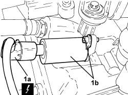

1056B48 PHASE TRANSFORMER ELECTROMAGNET - R.R.
- Path
- Procedures > 10 ENGINE > 1056 PETROL INJECTION SYSTEM > 1056B MULTI-POINT INJECTION SYSTEM (MPI) > 1056B48 PHASE TRANSFORMER ELECTROMAGNET - R.R.
- Kind
- repair procedure (removal / refitting; the operation number is the code)
- Applies to
- engines: 1.4 8v; all production periods
- Interactive page
- https://sloeber94.github.io/elrnDB-fDbl/en/#/223000130
Applies to: engines: 1.4 8v; all production periods
 Removing
Removing
 Refitting
Refitting- Disconnect the negative battery terminal.
1. Disconnect electrical connection (1a), unscrew the bolt and remove the variable valve timing solenoid (1b).
Description | Connector | |
|---|---|---|
1a | Variable valve timing actuator | See N076 PHASE TRANSFORMER ACTUATOR |

Applies to: engines: 1.4 8v; all production periods
Refitting
Removing- Refit the variable valve timing electromagnet, secure with the bolt and connect the electrical connection.
- Connect the negative battery terminal.